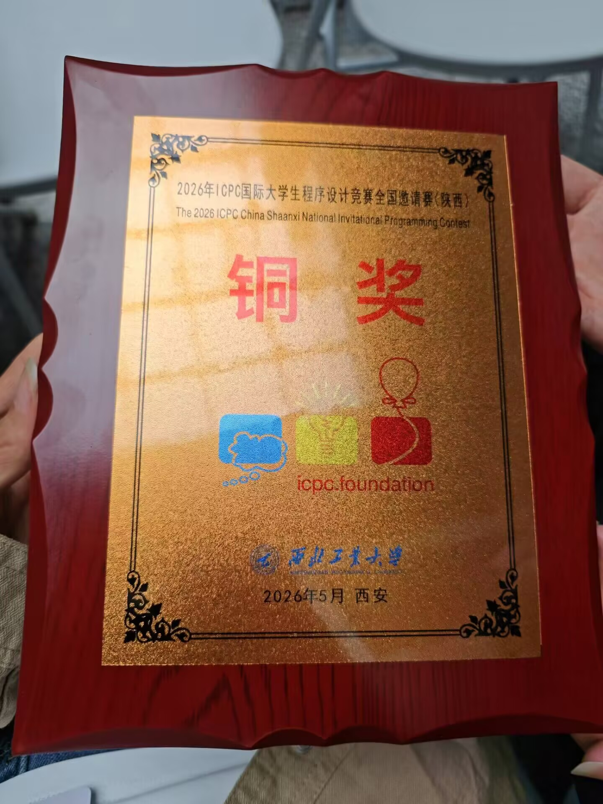

ICPC 西安邀请赛复盘：首战铜牌，继续向前
记录第一次参加 ICPC 相关赛事的经历：从赛前目标、开题顺序、队内配合，到最终拿下铜牌后的收获与反思。

这次 ICPC 西安邀请赛，是我第一次正式参加 ICPC 相关赛事。作为个人 ICPC 赛事的首秀，最终能够和队友一起拿下铜牌，对我来说是一段非常难忘的经历。
首先，必须感谢两位队友的带飞。赛前我们的目标其实比较明确：稳住节奏，争取通过三道题，拿到铜牌。比赛开始后，整体做题过程比预想中顺利很多。回头再看题目难度和通过顺序，我们当时的开题选择确实比较合理，也算是走出了一条比较优的路线。
当我们完成前三道题后，心情其实已经非常激动了，因为这已经达到了赛前设定的目标。但队友 yjb 大佬并没有停下来，而是果断选择继续冲击更高名次，直接开了 A 题。当时这道题的通过队伍并不多，甚至一度给人的感觉是只有金牌区队伍在做。经过一番推导和调试后，我们最终成功一发 AC。虽然因为没有开 long long 吃了一些罚时，但这道题的通过也让我们看到了冲击银牌的可能。
不过，随着比赛后半程其他队伍逐渐补题，我们的位置也开始发生变化。后续我们又尝试了 L 题和 D 题，最后主要集中在 D 题上继续推进。遗憾的是，最终距离银牌区还差了大约 40 名，没能更进一步。
虽然结果上还有遗憾，但这场比赛让我第一次近距离感受到了 ICPC 现场赛的强度和节奏：开题顺序、代码稳定性、罚时控制、队内分工，每一个环节都会影响最终排名。对我来说，这不仅是一枚铜牌，更是一次非常宝贵的比赛经验。
最后，还是要再次感谢两位队友的带飞。这次首战让我真正感受到了团队赛的魅力，也让我更清楚地认识到自己在算法能力、代码细节和临场判断上的不足。希望之后还能继续和优秀的队友一起训练、一起比赛，争取下一次走得更远。